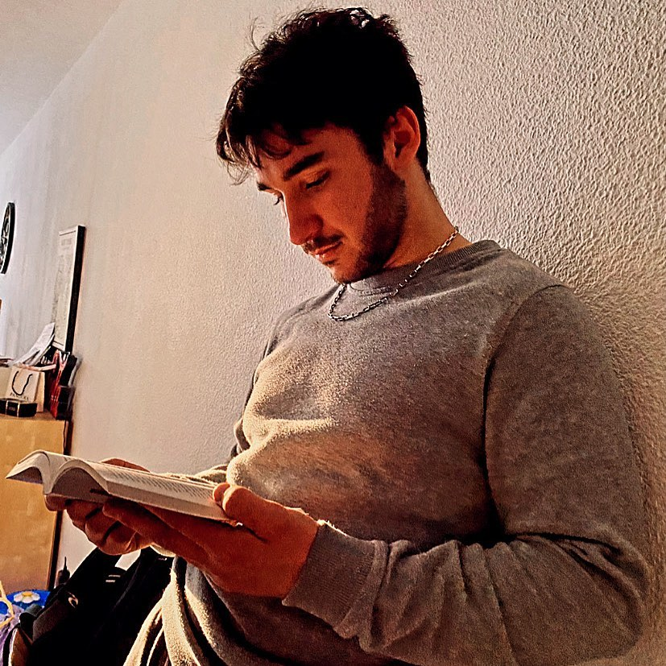

Frachisse--Béchu Antoine
Web Developer
Je suis un jeune web développeur depuis maintenant 1 an, grace à une formation en ligne que j'ai faite à coté de mon travail actuel.
Je suis en pleine reconversion professionnelle, passé d'un métier manuel à un métier digital n'est pas si facile mais je trouve ce métier fascinant et tellement riche.
"Ce que nous devons apprendre à faire, nous l'apprenons en le faisant."
Expériences
2015
Stage BAC Pro MEI - SPIT
Durant mon Bac pro en Maintenances des équipements industriel j'ai dû effectuer des semaines de stages en entreprise. Pendant celles-ci j'ai pu apprendre les techniques de soudure ainsi que tous ce qui touche à la mécanique.
2016
Stage BAC Pro MEI - SPIT
Durant mon Bac pro en Maintenances des équipements industriel j'ai dû effectuer des semaines de stages en entreprise. La SPIT m'a appris tout ce que je devais savoir sur la maintenance que ce soit au niveau mécanique, électrique et même hydraulique.
2018 - 2019
Apprenti Soudeur - Brunel Construction Metallique
Cet apprentissage a été bénéfique pour moi, j'ai pu continuer à me former et m'améliorer sur les techniques de soudures et également gagner en assurance et en autonomie.
2019 - 2023
Soudeur Metallier - Metallerie Industriel Fustier
Cette entreprise a été mon premier vrai contrat et c'est dans celles-ci que j'n'ai pu ne vraiment progresser que ce soit au niveau du travail mais aussi sur ma personne, j'ai appris à gérer une équipe ainsi qu'ont formé des apprentits.
Etudes
2010 - 2014
Brevet des Collèges
Collège Marie-Curie / Tournon sur Rhône
Préparation du Brevet des Collèges de septembre 2010 à Juillet 2014
Obtention du Brevet des Collèges / Session 2014
2014 - 2016
BEP PRO Maintenances des Equipements Industriels
Lycée Marius Bouvier / Tournon sur Rhône
Préparation du BEP PRO Maintenances des Equipements Industriels de septembre 2014 à Juillet 2016
Obtention du BEP PRO / Session 2016
2014 - 2017
BAC PRO Maintenances des Equipements Industriels
Lycée Marius Bouvier / Tournon sur Rhône
Préparation du BAC PRO Maintenances des Equipements Industriels de septembre 2014 à Juillet 2017
Obtention du BAC PRO / Session 2017
Etudes
2017 - 2018
Mention complémentaire en Soudure
CFA BATIPOLE / Livron sur Drôme
Préparation de la Mention complémentaire en Soudure de septembre 2017 à Juillet 2018
Obtention de la Mention complémentaire / Session 2018
2021 - 2022
Certification PRO Développeur Web
Openclassrooms / A distance
Préparation de la Certification PRO Développeur Web de septembre 2021 à Septembre 2022
Obtention de la Certification PRO / Session 2022
Mes compétences
Front-End
HTML
CSS
JS
React
Back-End
Node
Postman
MongoDB
UI/UX Design
Figma
Dernier projet

Salon Aline et A
techniques utilisées:
Ce projet est un site vitrine pour un salon de coiffure qui a été fait en 2022 malheureusement le commerce à changer de propriétaire donc également de nom... La nouvelle propriétaire n'en as pas voulu. Le site vitrine est donc inexploitable.
Ceci disait le projet a été coder en HTML, CSS et très peu de JS.
j'ai également présenté une maquette faites par mes soins à la cliente.